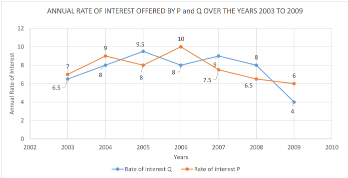

Direction :What approximate value will come in place of question mark (?) in the given question? (You are not expected to calculate the exact value) 100.57+√(144.51)=?%of 3696 A) 4 B) 5 C) 3 D) 7 E) 6 .
Direction :What approximate value will come in place of question mark (?) in the given question? (You are not expected to calculate the exact value) 48.98 % of 200+476.05=(?)2 A) 26 B) 25 C) 24 D) 28 E) 23 .
Direction :What approximate value will come in place of question mark (?) in the given question? (You are not expected to calculate the exact value) √2500.89 + (4/40) of 800.35 + 1024 × 5 ÷ 4 = ? A) 1425 B) 1420 C) 1440 D) 1450 E) 1410 .
Direction :What approximate value will come in place of question mark (?) in the given question? (You are not expected to calculate the exact value) (?)% of 400.68 ÷ 75.69 + (2/5) of 315.35 = 30% of 625.48 A) 1135 B) 1188 C) 1153 D) 1170 E) 1120 .
Direction :What approximate value will come in place of question mark (?) in the given question? (You are not expected to calculate the exact value) 0.3333X0.1667X0.8333 =(?) 0.2222X0.6667X0.1250 A) 4.5 B) 2.5 C) 3.5 D) 1.5 E) 5.5 .
Pure ghee costs Rs 100 per kg.After adulterating it with vegetable oil costing Rs 50 per kg, a shopkepper sells the mixture at the rate of Rs 96 per kg, thereby making a profit of 20%.In what ratio does he mixes the two? A) 3:4 B) 2:3 C) 3:2 D) 1:4 E) 2:5
Profit earned by selling an article for Rs 1060 is 20% more than the loss incurred by selling the same article for Rs 950. At what price should the article be sold to earn 20% profit ? A) 1080 B) 980 C) 1800 D) 1200 E) None of these
The milk and water in two vessels A an B are in the ratio 4:3 and 2:3 respectively.In what ratio , the liquid in both vessels be mixed to obtain a new mixture in vessel C containing half milk and half water? A) 4:9 B) 5:7 C) 7:5 D) 3:5 E) 2:5
What annual installment will discharge a debt of Rs 1218 due in 3 years at 16% simple interest ? - A) 325 B) 350 C) 360 D) 365 E) 320
A sector of 90 degrees cut out from a circle has an area of 88/7 sq cm . Find the radius of circle (in cm)? A) 5 B) 4 C) 3 D) 6 E) 1
The ratio of the areas of the incircle and circumcircle of an equilateral triangle is ? A) 1:2 B) 1:3 C) 1:4 D) 2:3 E) 7:22
A sum of Rs 55 is divided among A,B and C in such a way that A gets 5 more than B and B gets 10 more than C. The ratio of shares of C,B and ? A) 5:4:2 B) 2:4:5 C) 2:4:7 D) 1:3:2 E) 2:5:7
Four person are chosen at random from a group of 3 men, 3 women and 3 children.The probablity that exactly 2 of them are children is ? A) 3:7 B) 5:14 C) 7:12 D) 1:3 E) 2:7
A train running at 54 kmph takes 20 sec to pass a platform.Next it takes 12 seconds to pass a man walking at 6 kmph in the same direction in which the train is going.Find the length of the platform (in m) ? A) 170 B) 150 C) 140 D) 125 E) 160
In a 100 m race, A runs at 8 km per hour .If A gives B a start of 4m and stillbeats him by 15 sec, what is speed of B?(in kmph) A) 5.25 B) 4.75 C) 4.5 D) 5.76 E) 4.25
Direction (21-28): In the given questions, two quantities numbered (I) and (II) are given below.You have to solve both the quantities and mark the appropriate answer: 1) Quantity (I) ≥Quantity (II)2) Quantity (I) < Quantity(II)3) Quantity (I) ≤Quantity (II) 4) Quantity (I) > Quantity(II) 5) Quantity (I) = Qunatity(II) Or No Relation
(I). 3x2 – 10x + 8 = 0,find x (II). 3y2 + 8y – 16 = 0, find y A) Quantity (I) ≥ Quantity (II) B) Quantity (I) < Quantity (II) C) Quantity (I) ≤ Quantity (II) D) Quantity (I) > Quantity (II) E) Quantity (I) = Quantity (II) or No relation
Direction (21-28): In the given questions, two quantities numbered (I) and (II) are given below.You have to solve both the quantities and mark the appropriate answer: 1) Quantity (I) ≥Quantity (II)2) Quantity (I) < Quantity(II)3) Quantity (I) ≤Quantity (II) 4) Quantity (I) > Quantity(II) 5) Quantity (I) = Qunatity(II) Or No Relation
(I). 3x2 + 16x + 20 = 0,find x (II). 3y2 + 8y + 4 = 0,find y A) Quantity (I) ≥ Quantity (II) B) Quantity (I) < Quantity (II) C) Quantity (I) ≤ Quantity (II) D) Quantity (I) > Quantity (II) E) Quantity (I) = Quantity (II) or No relation
Direction (21-28): In the given questions, two quantities numbered (I) and (II) are given below.You have to solve both the quantities and mark the appropriate answer: 1) Quantity (I) ≥Quantity (II)2) Quantity (I) < Quantity(II)3) Quantity (I) ≤Quantity (II) 4) Quantity (I) > Quantity(II) 5) Quantity (I) = Qunatity(II) Or No Relation
(I). 6x2 + 7x -3 = 0, find x(II). y (10y – 1) = 2, find y A) Quantity (I) ≥ Quantity (II) B) Quantity (I) < Quantity (II) C) Quantity (I) ≤ Quantity (II) D) Quantity (I) > Quantity (II) E) Quantity (I) = Quantity (II) or No relation
Direction (21-28): In the given questions, two quantities numbered (I) and (II) are given below.You have to solve both the quantities and mark the appropriate answer: 1) Quantity (I) ≥Quantity (II)2) Quantity (I) < Quantity(II)3) Quantity (I) ≤Quantity (II) 4) Quantity (I) > Quantity(II) 5) Quantity (I) = Qunatity(II) Or No Relation
(I). 144 * 36 – 100 * x = -1000, find x (II).2.25 * 16 + 5.25 * 8 =y + 83,find y A) Quantity (I) ≥ Quantity (II) B) Quantity (I) < Quantity (II) C) Quantity (I) ≤ Quantity (II) D) Quantity (I) > Quantity (II) E) Quantity (I) = Quantity (II) or No relation
Direction (21-28): In the given questions, two quantities numbered (I) and (II) are given below.You have to solve both the quantities and mark the appropriate answer: 1) Quantity (I) ≥Quantity (II)2) Quantity (I) < Quantity(II)3) Quantity (I) ≤Quantity (II) 4) Quantity (I) > Quantity(II) 5) Quantity (I) = Qunatity(II) Or No Relation
(I).19.88% of 2299.98 + 19.99% of 4699.91 = x + 35.88% of 449.99, find x (II).25.999 × 8.004 × 15.998 A) Quantity (I) ≥ Quantity (II) B) Quantity (I) < Quantity (II) C) Quantity (I) ≤ Quantity (II) D) Quantity (I) > Quantity (II) E) Quantity (I) = Quantity (II) or No relation
Direction : Two different finance companies declared fixed annual rate of interest on the amounts invested with them by investors. The rate of interest offered by these companies varied with the variation in the economy of the country and bank's rate of interest.The annual rate of interest offered by two companies P and Q over the years 2003 to 2009 are shown by the line graph provided below.Answer the questions based on the graph 
If two different amounts in the ratio 8:9 are invested in P and Q respectively in 2009, then the amount received after one year as interest from the companies P and Q are respectively in the ratio of ? A) 02:03 B) 03:04 C) 06:07 D) 04:03 E) 09:08
Direction : Two different finance companies declared fixed annual rate of interest on the amounts invested with them by investors. The rate of interest offered by these companies varied with the variation in the economy of the country and bank's rate of interest.The annual rate of interest offered by two companies P and Q over the years 2003 to 2009 are shown by the line graph provided below.Answer the questions based on the graph
In 2007 , a part of Rs 30 lakh was invested in company P and the rest was invested in company Q for one year.The total interest received was Rs 2.43 lakh.What was the amount (in Rs Lakh) invested in company P A) 9 B) 11 C) 12 D) 14 E) 18
Direction : Two different finance companies declared fixed annual rate of interest on the amounts invested with them by investors. The rate of interest offered by these companies varied with the variation in the economy of the country and bank's rate of interest.The annual rate of interest offered by two companies P and Q over the years 2003 to 2009 are shown by the line graph provided below.Answer the questions based on the graph
A sum of Rs 4.75 lakh was invested in company Q in 2006 for 1 year.How much more interest (Rs) would have been earned if the sum was invested in company P A) 19000 B) 14250 C) 11750 D) 9500 E) 7500
Direction : Two different finance companies declared fixed annual rate of interest on the amounts invested with them by investors. The rate of interest offered by these companies varied with the variation in the economy of the country and bank's rate of interest.The annual rate of interest offered by two companies P and Q over the years 2003 to 2009 are shown by the line graph provided below.Answer the questions based on the graph
An investor invested a sum of Rs 12 lakh in company P in 2005.The total amount received after 1 year was reinvested in the same company for 1 year.The total appreciation received by the investor on his investmet was (in Rs) A) 296200 B) 242000 C) 225600 D) 216000 E) 203500
Direction : Two different finance companies declared fixed annual rate of interest on the amounts invested with them by investors. The rate of interest offered by these companies varied with the variation in the economy of the country and bank's rate of interest.The annual rate of interest offered by two companies P and Q over the years 2003 to 2009 are shown by the line graph provided below.Answer the questions based on the graph
An investor invested a sum of Rs 5 lakh in company Q in 2003.The total amount received after 1 year was reinvested in the company P for 1 year.The total amount received by the investor from company P A) 594550 B) 580425 C) 577800 D) 577500 E) 575075
Number of Kitkat sold by shop D in January is what percentage less than the number of Kitkat sold by shop B in March ? A) 30% B) 50% C) 45% D) 75% E) 35%
What is the average number of Kitkat sold by shop E in last 3 months ? A) 136 B) 144 C) 156 D) 150 E) 130
What is the ratio between total number of Kitkat sold by shop A and B together in March and the total number of kitkat sold by shop C and D in the same month ? A) 58:75 B) 195:78 C) 65:27 D) 68:31 E) 186:84
What is the difference between the total no of Kitkat sold by shop A and E together in January to the total number of Kitkat sold by shop B and C in May ? A) 45 B) 48 C) 52 D) 42 E) 39
The 2nd highest number of Kitkat was sold by which shop and in which month? A) A,February B) D,May C) E,May D) C , April E) A,May